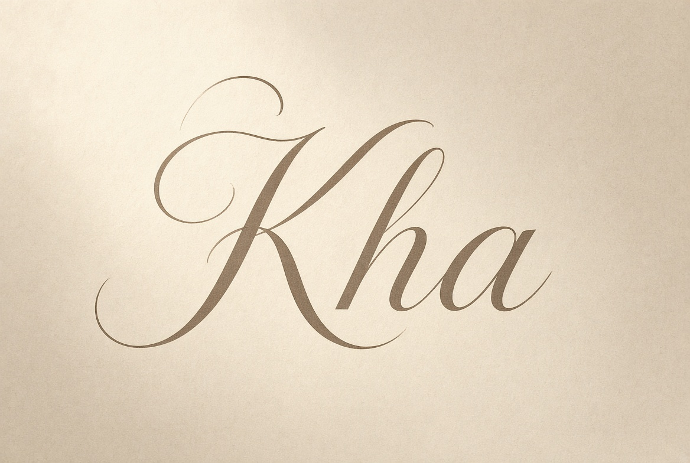

Bài viết bằng tay đầu tiên của tôi
Lý do có blog này
Viết chậm về những thứ đáng nhớ
Một góc viết từ Sài Gòn. Ít bài, đọc chậm, không vội xuất bản cho đủ lịch.

Lý do có blog này

Cà phê đen đá không phải thức uống. Ở Sài Gòn, nó là chỗ ngồi, là khoảng lặng giữa hai việc, là lúc chữ bắt đầu chịu ra.

Một cuốn sách hay không cần đọc nhanh. Nó cần chỗ trống giữa các câu, và vài buổi chiều để quay lại trang đã gấp.

Tôi không tin ghi chú trên điện thoại. Chữ viết tay giữ được nhịp thở của buổi đó, kể cả khi nội dung chẳng còn quan trọng.
Tôi viết từ Sài Gòn. Nguyễn Trần Kha là nơi giữ những bài không vội — ghi chép, đọc, phố, và vài suy nghĩ về chữ. Không newsletter, không quảng cáo. Chỉ trang này, khi có gì đáng nhớ.